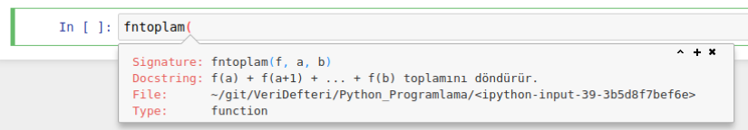

import math
print( math.sqrt(2) )
print( math.sin(math.pi/2) )1.4142135623730951
1.0Kaan Öztürk
January 6, 2018
Python Programlamaya Giriş yazı dizimize Python fonksiyonlarının temelleriyle devam ediyoruz. Dizinin bütün yazılarına erişmek için Python Programlamaya Giriş kategorimize bakabilirsiniz. Bu dizideki yazılar ayrıca Jupyter defterleri halinde GitHub depomuzda da mevcut.
Yazı dizimizin şimdiye kadarki bölümlerinde bir programı inşa etmek için gereken bütün yapı taşlarını gördük. Prosedürel programlama denen paradigma içinde programlar birbiri arkasından işlenir, bir karar verilmesi gerektiğinde program akışı iki yoldan birini seçer, veya bir döngü içindeki bir kod parçası tekrarlanır.
Teorik olarak, her türlü programı yazmak için bu yapılar yeterli. Ancak, Yogi Berra’nın dediği gibi: Teoride teori ve pratik arasında fark yoktur, ama pratikte vardır.
Kod yazarken işlemleri sık sık farklı yerlerde tekrarlamamız gerekir. Söz gelişi, bir yatırımın belli bir dönem sonunda bileşik faizle ne miktara ulaştığını yazmak için bir döngü yazabiliriz. Bu tür bir işlemi büyük bir program içinde değişik yerlerde (mesela farklı yatırım araçları için) kullanmamız gerekebilir. Programcılar böyle tekrarlanan işler için aynı kodu tekrar tekrar yazmaktansa, bunları bir fonksiyon (prosedür veya yordam olarak da bilinir) olarak paketleyip kullanmayı tercih ederler. Fonksiyon kullanmak sayesinde:
Bu faydalar sadece Python değil, her türlü programlama dili için geçerlidir tabii.
Bir fonksiyon bir kara kutu gibi düşünülebilir: Aldığı parametreler onun girdisi, verdiği (“döndürdüğü”) değer ise çıktısıdır. Fonksiyonlara istediğiniz sayıda parametre verebilirsiniz. Parametre almayan ve/veya geriye bir değer vermeyen fonksiyonlar da olabilir.
Bir kütüphane belli bir işlev için hazırlanan fonksiyonların topluluğudur. Bir kütüphane matematik fonksiyonlarını toplarken, başka bir kütüphane kelime işleme, bir başkası ağ iletişimi, bir başkası oyun modülleri barındırıyor olabilir. Kütüphaneler bir dilin resmi tanımına dahil olabilir ve kurulumda beraber gelebilir (bu durumda onlara standart kütüphane denir), veya üçüncü kişiler tarafından hazırlanmış olabilir.
Python dili çok zengin bir standart kütüphaneye sahiptir. Matematik işlemleri, istatistik işlemleri, gün ve saat işlemleri, dosya sıkıştırma, internet protokolleri, HTML, işletim sistemi yönetimi, grafik arayüz oluşturma, ve daha bir çok işlem için gereken hazır fonksiyonlar Python ile birlikte gelir. Bunların dışında yüzlerce başka kütüphane de mevcuttur, istediğinizde bunları sisteminize kurup kullanabilirsiniz. Daha sonraki yazılarda kendi kütüphanelerimizi nasıl oluşturacağımızı da göreceğiz. Bu yazıda sadece matematik fonksiyonları kütüphanesini örnek olarak kullanacağız.
Kütüphaneler diskimize kurulu olarak hazır bekliyor olsalar da, onları kullanmak için önce import komutuyla yorumlayıcıya yüklememiz gerekir.
Burada math.sqrt(2) ifadesi bir fonksiyon çağrısıdır. Matematik modülü math içindeki karekök fonksiyonu sqrt çağrılır ve 2 argümanı verilir. Aradaki nokta bir üyelik belirtir; sqrt fonksiyonu math modülünün altındadır. Keza math.sin aynı modülün altındaki sinüs fonksiyonudur, math.pi ise \(\pi\) sayısıdır.
Siz ayrıca pi veya sqrt isimli değişkenler veya fonksiyonlar tanımlamış olsanız da, onlar ile bu isimler karışmaz; pi ile math.pi farklıdır. Burada math bir isim alanı (namespace) oluşturur; kendi tanımlarını ayrı tutar.
Yükleme sırasında modülün adını değiştirebiliriz. Özellikle uzun isimli modülleri daha kısa isimle kullanmak için bu özellik faydalı olur.
Veya, modüldeki bütün isimlere ihtiyacınız yoksa, onları mevcut isim alanınıza tek tek belirleyerek alabilirsiniz. İsim değiştirme burada da geçerlidir. Modül içindeki isimleri değiştirerek alabilirsiniz.
1.4142135623730951
1.0(Jupyter defterinin kod hücresinde \(\pi\) yazmak için \pi yazın ve Tab tuşuna basın.)
Başka bir alternatif, modüldeki bütün isimleri mevcut isim alanına yüklemektir.
Ancak bu usül Python programcıları tarafından tavsiye edilmez. Bir modül adı kullanmak, ister math ister kısaca m, bir isim alanı yaratır ve isim çatışmalarını engeller. Varsayalım ki pi veya tan değişkenlerini kodunuzda bir yerlerde önceden başka bir anlamda tanımladınız. Modülü import * ile yüklemekle önceki tanımları silersiniz, ve kodunuz biraz karmaşık ise bunu farketmeyebilirsiniz bile. Özellikle büyük modüllerde pek çok değişik isim gizli olabilir ve neyi sildiğinizi farketmeyebilirsiniz bile. En doğrusu, birazcık daha fazla yazmayı göze alıp bir modül ismi kullanmaktır.
Bir modülde tanımlı bütün isimlere dir fonksiyonuyla erişilebilir.
['__doc__',
'__file__',
'__loader__',
'__name__',
'__package__',
'__spec__',
'acos',
'acosh',
'asin',
'asinh',
'atan',
'atan2',
'atanh',
'ceil',
'copysign',
'cos',
'cosh',
'degrees',
'e',
'erf',
'erfc',
'exp',
'expm1',
'fabs',
'factorial',
'floor',
'fmod',
'frexp',
'fsum',
'gamma',
'gcd',
'hypot',
'inf',
'isclose',
'isfinite',
'isinf',
'isnan',
'ldexp',
'lgamma',
'log',
'log10',
'log1p',
'log2',
'modf',
'nan',
'pi',
'pow',
'radians',
'sin',
'sinh',
'sqrt',
'tan',
'tanh',
'tau',
'trunc']Modüldeki belli bir fonksiyonun nasıl kullanıldığını hatırlamanız gerektiğinde help fonksiyonunu kullanabilirsiniz. Bu işlemle, fonksiyonun içine gömülü belgeleme dizesi (docstring) ekrana yazılır. Belgeleme dizelerinin nasıl oluşturulacağını bu yazının sonunda okuyabilirsiniz.
Şimdi kendimiz nasıl fonksiyon yaratabileceğimizi görelim. Python’da fonksiyonlar def kelimesiyle tanımlanır. Mesela:
Bu fonksiyon basit bir iş yapıyor, aldığı parametreyi olduğu gibi ekrana basıyor. Herhangi bir nesne alabildiğine dikkat edin. Fonksiyonun geri verdiği bir değer yok. Bu yüzden yukarıdaki komutta çıktı hücresinde (None, None, None) görüyoruz.
Fonksiyonların bir değer geri vermesi istiyorsak return komutunu kullanırız. Bu komut, arkasından gelen ifadenin değerinin, fonksiyonu çağıran programa bildirilmesini sağlar ve fonksiyonun çalışmasını bitirir.
Aşağıdaki fonksiyon aldığı iki parametreye çarpma işlemini uygular ve sonucu geri verir:
Geri verilen değeri daha sonraki bir işlemde kullanmak için bir değişkene atayabilirsiniz.
C, C++, Fortran, Java gibi daha katı dillerden farklı olarak, Python’da fonksiyon tanımlarken, parametrelerin ne tipte (tamsayı, kayan noktalı sayı, dize, liste, vs.) olduğu belirtilmez. Bu özellik sayesinde Python programları farklı veri tipleriyle işlem yapma kolaylığı sağlar. Mesela carp bir dize ile bir tamsayı almaya itiraz etmez. Çarpma işlemini bu iki tiple tanımlandığı gibi yapıp sonucu geri verir.
Ama bu kolaylığın bir bedeli vardır: Fonksiyonun içinde, kullandığınız veri tipleri ile ilgili işlemlerin uyumlu olması gereklidir. Sözgelişi, iki dizeyi “çarpmak” bir hata mesajına yol açar, çünkü dizeler arasında * işlemi tanımlı değildir.
Böyle hatalardan kaçınmak için birkaç yol vardır. Bunlardan biri assert komutu ile belli şartların sağlanıp sağlanmadığını önceden yoklamak, bir diğer ise fonksiyonun içinde istisna işlemi (“exception handling”) yapmaktır. Böylece belli bir hata (meselâ yukarıdaki gibi TypeError) oluştuğunda, programı durdurmadan akışı düzenlemek mümkün olur. Bu konulara sonraki bölümlerde yer vereceğiz.
Fonksiyonlar her tipte nesne geri verebilirler. Bir çokuz nesnesi veren bir fonksiyon kullanarak, birden fazla değer çıkarma davranışı taklit edilebilir:
Python dinamik bir dildir: Programın işleyişi sırasında komutlar yeni nesnelerin üretilmesini ve işlenmesini sağlar. Fonksiyonlar da dinamik olarak def komutuyla yaratılır. Buna karşılık, C gibi derlenen diller böyle davranmaz. Bu tür dillerde fonksiyonlar, program henüz çalıştırılmadan, derleme aşamasında yaratılır ve işletilebilir ikili koda gömülür. Python gibi dillerin dinamik yapısı sayesinde, fonksiyonların başka komutlar ve bloklar içinde, mesela sadece bir şart doğru olduğunda tanımlanmasını sağlayabiliriz.
Bir fonksiyon tanımlanmasında, önce belirttiğimiz kod parçasını içeren bir fonksiyon nesnesi yaratılır, sonra bu nesne ona verdiğimiz isme bağlanır. Bu anlamda def komutu atama (=) işlemi gibi çalışır. Bunun bir yan faydası, varolan bir fonksiyona başka isimler verebilme imkânıdır.
İki ismin de aynı nesneye işaret ettiğini is komutuyla doğrulayabiliriz.
Yine aynı dinamik özellik sayesinde, fonksiyon veren fonksiyonlar (“fonksiyon fabrikaları”) tanımlanabilir.
Buradaki kuvvetfonk fonksiyonu, aldığı parametreyi kullanarak yarattığı bir fonksiyon nesnesini verir. Bu fonksiyon nesnesine bir isim atayıp bu isimle çalıştırabiliriz.
Aslında bu fonksiyon nesneleri bir isme atamadan da çağrılabilir, ama her seferinde bu fonksiyonlar baştan yaratılacağı için hesaplama açısından verimsiz olur.
Fonksiyonlar, başka fonksiyonları parametre olarak alabilirler. Basit bir örnek olarak, \(\sum_{i=a}^{b} f(i)\) toplamını veren bir fonksiyon yazalım.
Fonksiyonlara, listeler gibi değiştirilebilir (mutable) parametreler veriyorsanız, ve bunlar fonksiyon içinde değiştiriliyorsa, bu değişiklik kalıcı olur.
Bir fonksiyon blokunun dışında ve içinde aynı isimde değişkenler kullanırsanız, içeride olanın değeri kullanılır olur. Fonksiyon, dıştaki değişkenin değerini değiştirmez.
Python bu iki x ismini farklı değişkenler olarak görür. İkinci x bir yerel değişkendir ve sadece f fonksiyonu içinde tanımlıdır. Birincisi ise global görünürlüğe sahiptir; aşağısında tanımlanan bütün fonksiyonlarda kullanılabilir. Yukarıdaki örnekte f fonksiyonu tanımı altında x=20 satırını silersek fonksiyon ekrana global x değeri olan 10’u basacaktır.
Bir seviye daha karmaşık bir örnek olarak, f fonksiyonu içinde başka bir fonksiyon tanımlayalım.
x = 10
print("x =",x)
def f():
x = 20
print("f içinde x =",x)
def g():
x = 30
print("g içinde x =", x)
g()
f()x = 10
f içinde x = 20
g içinde x = 30Bir değişken ismine atanmış değerin tespit edilmesi için genel kural şöyledir: Önce program akışının bulunduğu blok içinde bir tanım yapılmış mı diye bakılır. Eğer en içteki blokta bir tanım bulunmazsa, onu çevreleyen dış bloka, yoksa onun da dış blokuna bakılır. En dış bloka gelindiğinde global değişkenler içinde olup olmadığına bakılır. En son olarak öntanımlı (“built-in”) isimler kontrol edilir.
Peki, diyelim ki tam tersini istiyoruz. Yani, bir fonksiyon içinde, fonksiyonun dışında tanımlanmış bir değişkene yeni bir değer atamak istiyoruz. Somut olarak, iki önceki örnekte, fonksiyon çalıştıktan sonra x’in 20 olmasını istiyoruz. Bunu, fonksiyon içinde global komutuyla sağlarız.
Ancak, global değişkenlerden mümkün olduğunca kaçınmak gerekir. Fonksiyonlara giriş bilgisini parametrelerle sağlamak ve çıkış değerini return komutu aracılığıyla almak daha iyidir. Böylece fonksiyonların düzgün bir akış içinde çalışmasını, bileşenlerin birbirine kolayca bağlanan modüler bir yapıda olmasını, “aldığı belli verdiği belli” olmasını sağlarız. Bu şekilde programlar daha okunaklı ve anlaşılır olur. Global değişkenler ise hem giriş hem çıkış kanalı oldukları için bu akışı bozarlar. Globallerin fazla kullanıldığı programları hem okumak zordur, hem de bilgi akışının karışık bir yumak haline gelmesi mümkündür, hata yapma ihtimali artar. Fonksiyonlara veriyi her zaman fonksiyon parametreleriyle vermeye çalışın.
Fonksiyon tanımına bir belgeleme dizesi (docstring) eklemek mümkündür. Bir belgeleme dizesi, fonksiyon başlığının hemen altında başlayıp biten bir açıklama metnidir. Normal bir Python dizesinden hiç bir farkı yoktur, ama genellikle üç tırnak (""") ile sınırlandırılırlar, böylece birkaç satıra yayılabilirler. Fonksiyonun çalışmasını etkilemezler. Birçok Python aracı, sözgelişi etkileşimli help fonksiyonu bu dizeleri otomatik olarak alıp kullanabilir.
Help on function fntoplam in module __main__:
fntoplam(f, a, b)
f(a) + f(a+1) + ... + f(b) toplamını döndürür.
Bütünleşik geliştirme ortamlarında (IDE’lerde) çalışırken, fonksiyonu yazdığınız sırada bu belgeleme dizesine ulaşabilirsiniz. Sözgelişi Jupyter defterinde Shift-Tab basarsanız bir yardım penceresi açılır.
